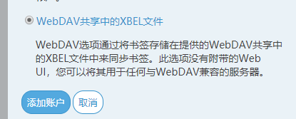
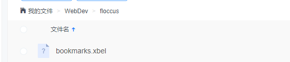
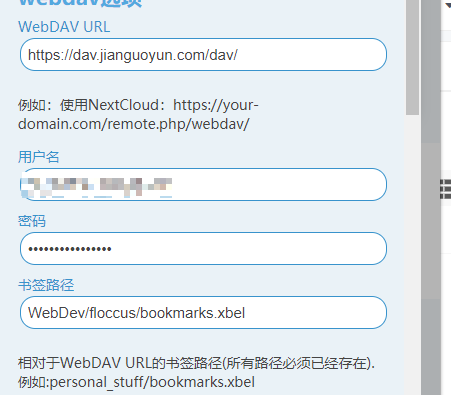
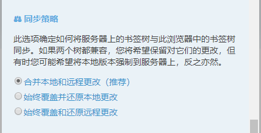

介绍浏览器书签同步工具floccus。通过此工具，可使chrome、firefox的书签跨浏览器、操作系统、电脑进行同步。
主要原理是将书签信息保存到一个xbel格式里面，通过WebDev协议实现各平台同步。
介绍
floccus生成.xbel格式书签，将书签层级、链接、名称通过类似xml的格式进行记录。
通过id比对，可以做到覆盖本地或无端或兼容。使各个浏览器书签保持同步。
配置
下载
chrome应用商店无法访问。可通过百度搜索国内插件下载或
chrome配置
更多工具>扩展程序或者直接在地址栏输入chrome://extensions/
点开右上角开发者模式，将下载好的.crx后缀插件拖动到浏览器界面。
如果安装后报红、不能启用。出现下图情况,通过{% post_link 2020-03/chrome离线安装扩展插件 %}解决

同步配置
floccus可选择WebDev进行备份。配合坚果云使用。
坚果云设置
登录或注册www.jianguoyun.com
floccus设置
点击新加的扩展程序。点击新建账户，选择WebDav共享的XBEL文件。

|
|


注意：同步策略最好选择合并本地和远程更改，否则会导致某个地方书签丢失。
